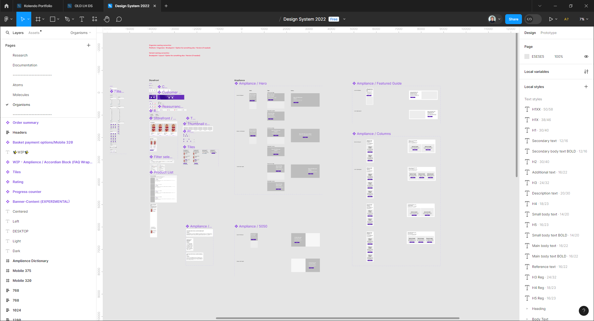

Design System
The Design System (DS) at Lovehoney was pieced together while the UX designers were actively working on projects. This led to disorganization, duplicated component builds, and inconsistency across the board and our projects. Anytime I found myself with some downtime, I chipped away at updating the DS.
Background
Lovehoney uses the Atomic Design methodology. This allows for consistency in all components; from atoms, to molecules, to organisms. Properly organizing and building-in flexibility between states and styling allowed one component to be used in numerous ways. With rules and restrictions set, anyone could correctly use these without needing to reference documentation.
Goal
Improve components and organize the DS for quicker application.
To achieve this, I’ll need to make components that are…
- consistent with an 8pt grid
- matching brand colors
- flexible in states and styling
- accessible
Research & Discovery
Before updating the DS, there needed to be a strategy. As a team, we each found 3 examples of DSs that were appealing. We then shared what we found and the appeal. Once we knew what we were looking to achieve, I took on the responsibility of drafting our process to get to a completed DS.
Audience
The primary audience was the UX designers, but we needed to make the DS accessible to developers, PMs, Creative, and the Storefront team. Knowing there was a range of skill sets that could benefit from using the DS, I began by writing out introductory documentation. This included defining a DS, Atomic Design, and UX principles.
Atoms
When building a house, the easiest place to start is at the foundation.
Original brand color display
Updated brand color display
Brand Colors
The color cards were doing more than providing the hex code for our brand colors. They also indicated how to stay in contrast compliance when using black or white font. But, I found the Creative or Storefront teams would often pair the primary brand color, a purple, with another brand color and fall out of compliance. So, I redesigned the color cards to include compliance information when pairing with the primary purple.

Original icon set

Updated icon set
Iconography
The original 50 icons were not set up with any guidelines, rules,
or consistency- there were 5 different “black” colors in the set!
I began rebuilding the Lovehoney iconography by seeing how a
complex icon could be rebuilt against a defined grid and keylines.
This allowed me to rebuild all 50 icons, with a couple extras.
These new icons had consistent brand colors, stroke width, and
corner radii.
Molecules
Once atoms were cleaned up, I tended to update pieces in the DS as I ran into them in my project designs.
Original Input field component

Updated Input field component
Input Fields
The next challenge was recreating the Input field component.
Originally, this component was set up with several different
states within the same component as hidden layers. Although there
were variants, the component was not flexible and, honestly, a bit
messy. I was tasked by the team to make this as a single, flexible
component that could support different states, a range of nested
instances, and varying amounts of fields.
This rebuild required a lot of planning and trial and error. I
knew I’d need to make variants based on the component states
(active, inactive, error), but there were a lot of questions I
could only figure out by getting into the build and seeing what
would happen!
Product tiles
While the holidays approached, I took the opportunity to learn about variables and even developed training for the UX teams when they returned from their break. The product tile was an exciting piece as it allowed me to prepare it for variables in its component construction.
Original Product tile
Updated Product tile
Clean up
Before I could set this component up as a variable, I needed
to:
- removing duplicated auto-layouts
- trimming the width by 1 pixel fit to fit the 8pt grid
- updating the image size to fit a clean 3:4 ratio
- sorting the component properties
Variable Prep
Once that was done, I could prepare it for prototyping by:
- separating the price from the currency symbol
- setting the product name to truncate at 3 lines
Prototyping with variables
Curious about
how to prototype with variables? See my training and learn how
this component helped simplify an add-on interaction from 54
frames to 1!
Reflection
The biggest and most consistent obstacle I ran into when updating
the DS was that many components were not originally built with
Atomic Design in mind. This led me to go back and forth between
components to ensure larger components were being built with the
flexibility of a well made smaller component.
This was a great project to help communication and build a stronger
relationship with the team. Being able to teach variables helped me
learn the concept better. Cleaning up components and teaching the
team better ways to construct them helped us all make more
consistent designs in less time. As any DS, it still has a ways to
go and may find itself evolving into something new entirely.